RUST / LINUX / WSLKnowledge with a record.
Revision 9. Read General corpus discovery, Similar cases, Omnigraph capability review and Run Watch and the session handoff and the five approved screens. Begin with the two citation stages. The full inventory contains 27 stages and 34 gates.
Priority queue · Citation calculus · Proof before admission · Reader experiments · Agent start here · Visual atlas PDF · Repository review · Scribes protocol · Website outline · Workflow 3 · Playbook adoption · View channels · Obsidian design · Storage decision · Omnigraph contract · Engineering layout · Fingerprints · Proposed calculus · Extension acceptance · Sample vault
Revision 9: general corpus discovery, proof-first citation work, Run Watch and scoped incident discovery. Core semantics remain v2; workflows use schema 3 and RPC protocol 2. The old graph warning defect is fixed. Read plans/17–23 for the two graph families, ledger, fingerprints, skill composition, cross-repo execution, learning and proposed calculus. Plans/15–16 retain the early P01O storage gate and immutable epochs. Native Obsidian and complete WSL qualification remain pending.
P00Freeze workflow 3 and adopt the playbook
Start from the current verified contracts and explicit remaining adapter work.
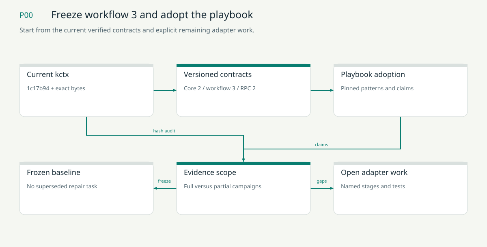
Build
- Current-source baseline and version matrix
- Pinned playbook adoption + compatibility inventory
- Evidence applicability and unresolved-work ledger
Exit gate
- Current source matches the claimed report inputs; unrun/full-scope claims stay explicit.
- Completed fixes are preserved and unresolved behaviors have destination gates.
- Workflow 3, protocol 2 and private playbook adoption are explicit.
Full stage instructions · Gates: WF00, WF21
P01Pin the build and storage setup
Build the same admitted toolchain on WSL without filling the wrong disk.
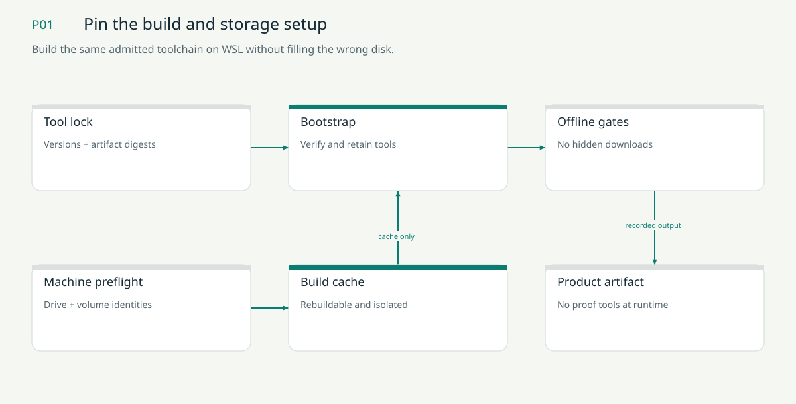
Build
- Dockerfiles/compose.yaml + toolchains.lock.json
- scripts/gate + receipt schema + preflight
- Verus-to-musl feasibility artifact and offline tool closure
Exit gate
- Clean container build and offline rerun succeed from admitted bytes.
- Missing external mount fails before creating large output on the system disk.
- Verified executable body is linked into the smoke artifact with recorded target/features.
Full stage instructions · Gates: WF01
P01OQualify the Omnigraph foundation
Admit the chosen backend contract before storage-dependent protocols and integration rely on it.
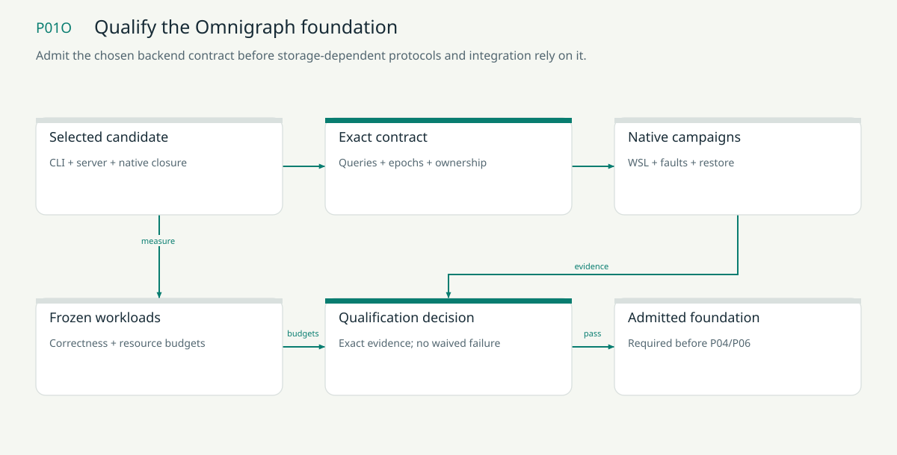
Build
- Pinned native backend and compatibility contract
- WSL storage/history/failure/restore evidence
- Frozen budgets and explicit go/no-go receipt
Exit gate
- Full declared WF24 scope passes; smoke probes alone are insufficient.
- Old epoch reads and independent restore preserve exact identities.
- No second normal database writer or hidden fallback is introduced.
Full stage instructions · Gates: WF01, WF24, WF21
P02Nominal domain and strict wire
Make invalid identities, units and boundary data impossible to use silently.
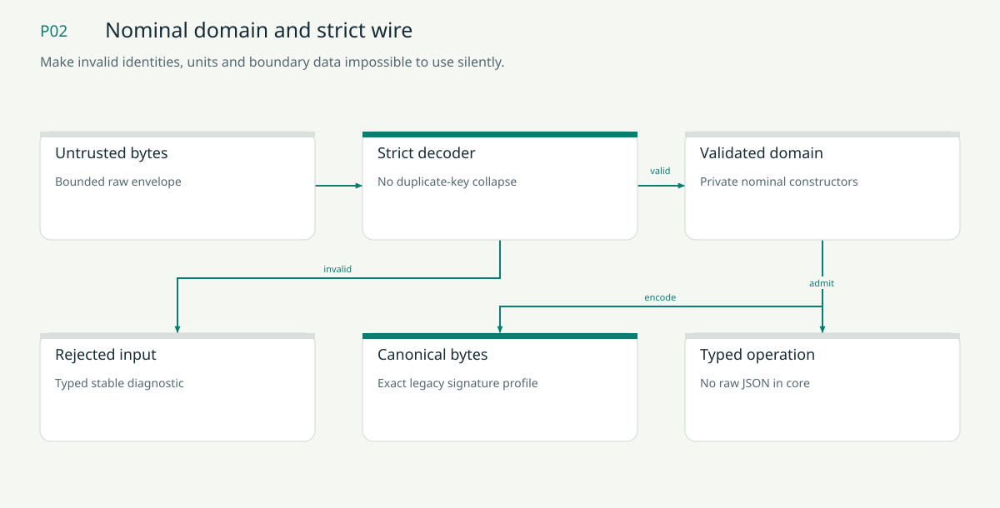
Build
- Validated domain types + wire schemas/codecs
- Canonical byte/signature fixtures
- Architecture/size/type gate with deliberate failing controls
Exit gate
- Wrong namespace/unit/state fails compilation for the intended reason.
- Malformed, oversized, ambiguous and unsupported inputs fail before domain construction.
- Legacy signatures verify over unchanged exact bytes; no JSON-number narrowing.
Full stage instructions · Gates: WF02, WF03
P03Verify the executable semantic core
Port the actual calculus and verify Rust decision bodies without weakening semantics.
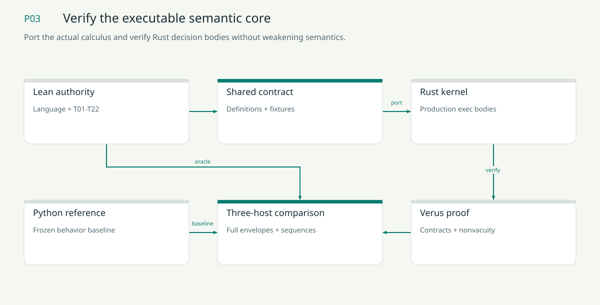
Build
- Pure production kernel + Verus contracts
- Three-host reference harness and traceability
- Lean/Verus/conformance/mutation receipts
Exit gate
- All reference operations agree on complete responses; no Python runtime fallback.
- Selected actual Rust functions verify and are linked into the candidate binary.
- Unapproved assumptions/open obligations are zero; cross-prover correspondence limits are stated.
Full stage instructions · Gates: WF04, WF05
P03PVerify named context portfolios
Authorize several contexts in one release without pooling their evidence.
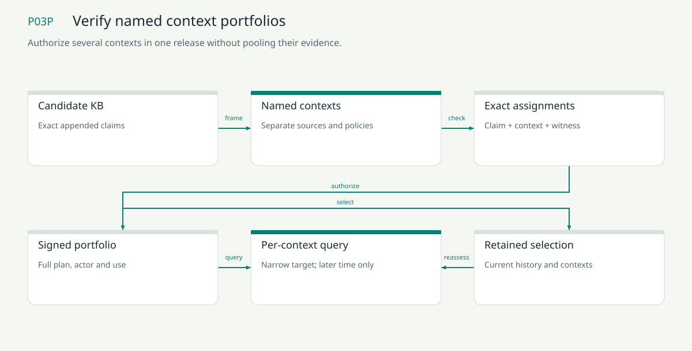
Build
- kernel/portfolio + nominal records
- V12 and updated model/conformance receipts
- Context query, version and migration contracts
Exit gate
- Multiple targets remain separately assessed in one authenticated release.
- Cross-context borrowing, omitted assignments and implicit retirement fail.
- Historical selection preserves current corrections and context policy.
Full stage instructions · Gates: WF19, WF03, WF04, WF05, WF06, WF07
P03CProve citation binding and admission
Establish exact citation judgments and a verified admission floor before enabling new proposals.
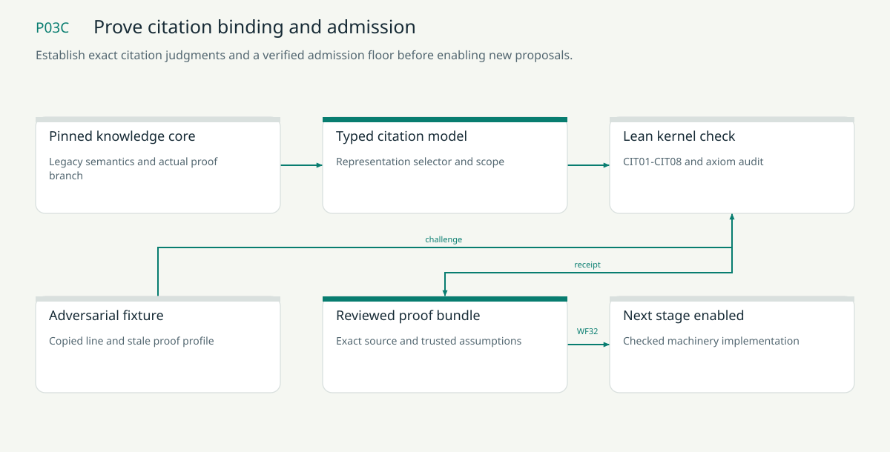
Build
- Lean judgments and theorem map
- Checked proof bundles and assumptions
- Counterexamples and mutation results
Exit gate
- CIT01-CIT08 have audited receipts.
- Legacy interpretations are preserved.
- Missing or mismatched proofs block.
Full stage instructions · Gates: WF32, WF02, WF04
P04Prove the operational protocols
Find interleaving failures and prove the declared safety invariants before integrating effects.
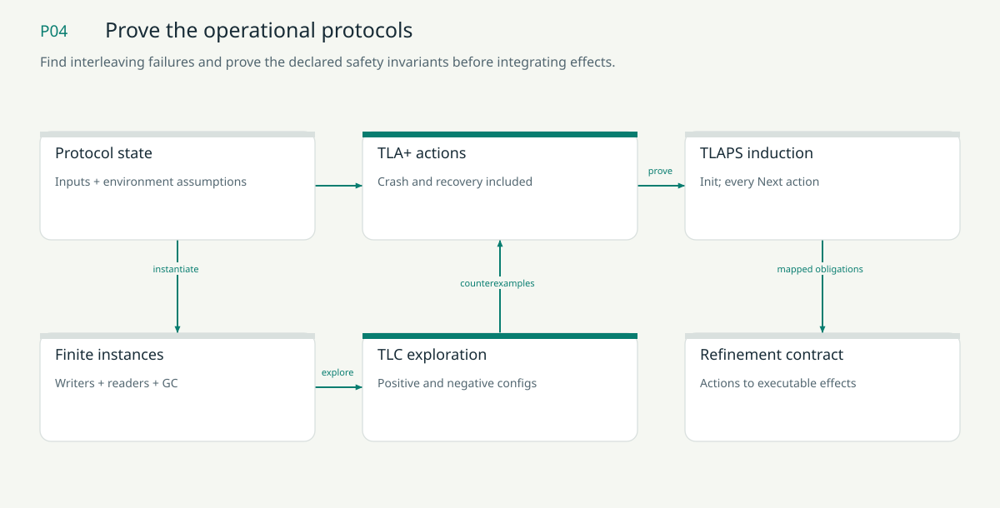
Build
- spec/M01-M06, M09 and M11 + TLC/TLAPS modules
- Action/refinement/effect contract map
- TLC/TLAPS receipts + calibrated mutant registry
Exit gate
- Every named action and bridge has a checked safety obligation.
- All positive TLC runs finish; mutants violate the intended property, not parsing.
- No general temporal proof claim is inferred from the supported TLAPS fragment.
Full stage instructions · Gates: WF06, WF07
P05Exact sources, citations and filesystem effects
Acquire and retain exact evidence while preserving authored bytes and containment.
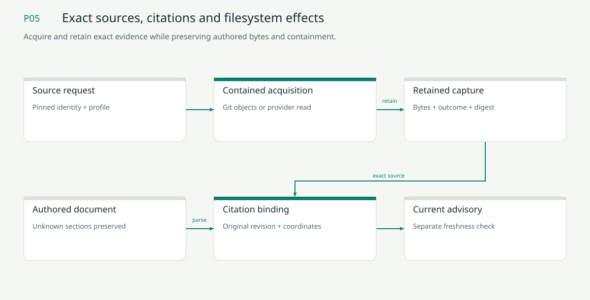
Build
- sources crate + filesystem/Git adapters
- Lossless document and citation fixtures
- Real-source containment/publication receipts
Exit gate
- Historical citation bytes survive rename/refresh/correction.
- No lexical-path-only containment claim; symlink/TOCTOU profile is exercised.
- Missing/partial/denied sources cannot become complete empty evidence.
Full stage instructions · Gates: WF08
P05CQualify the compact citation reader
Bind the proven judgments to the shipping reader and proposal-admission checker.
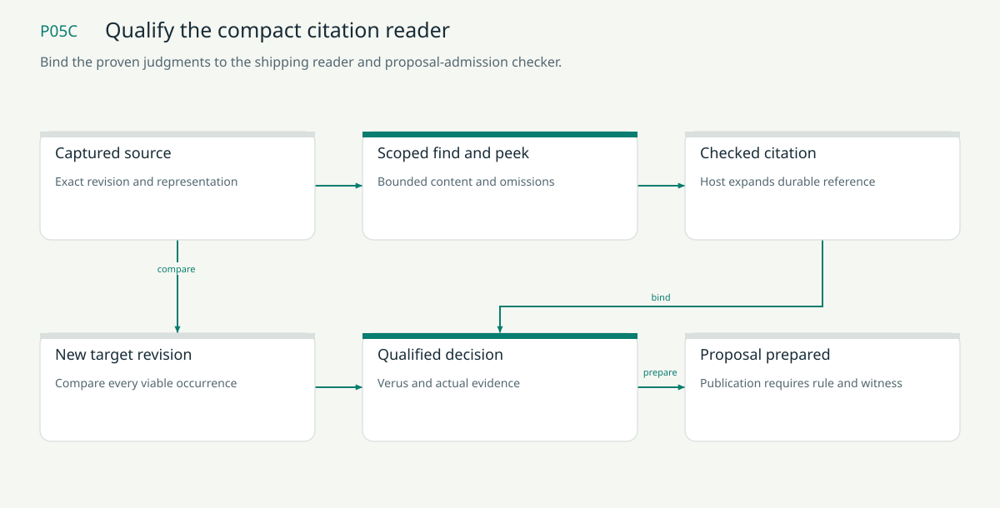
Build
- Bounded reader and Rust checks
- Proof-bundle and witness validator
- Correctness and token evaluation
Exit gate
- No incorrect successor attachment.
- Compact results preserve coverage.
- All admission paths require proofs.
Full stage instructions · Gates: WF33, WF02, WF05, WF06, WF07
P06Managed Omnigraph and pinned queries
Provision one admitted native writer and bind every read to graph, commit, schema epoch and query contract.
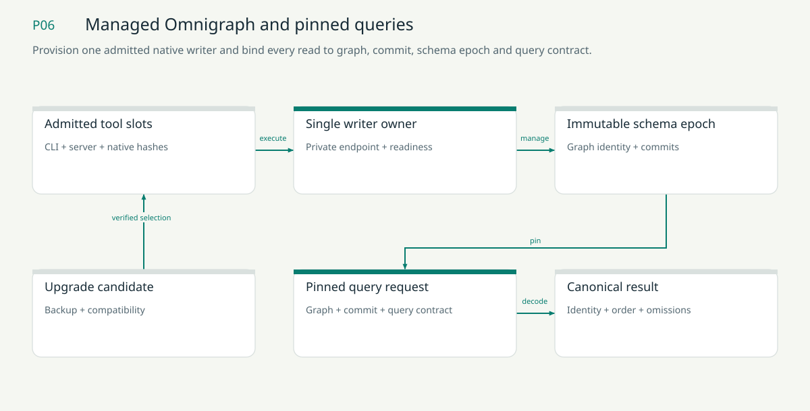
Build
- omnigraph adapter + native supervisor/installer
- Epoch/query profiles + exact canonical mapping
- Integrated native lifecycle and pinned-read evidence
Exit gate
- Fresh/offline install uses admitted CLI/server and native dependencies.
- Queries cannot drift across graph, commit, epoch or query contract.
- Wrong pins, overlap, uncertain writes and unsafe rollback fail explicitly.
Full stage instructions · Gates: WF09, WF24
P07Authenticated publication and recovery
Publish a complete approved generation once and recover every interrupted outcome.
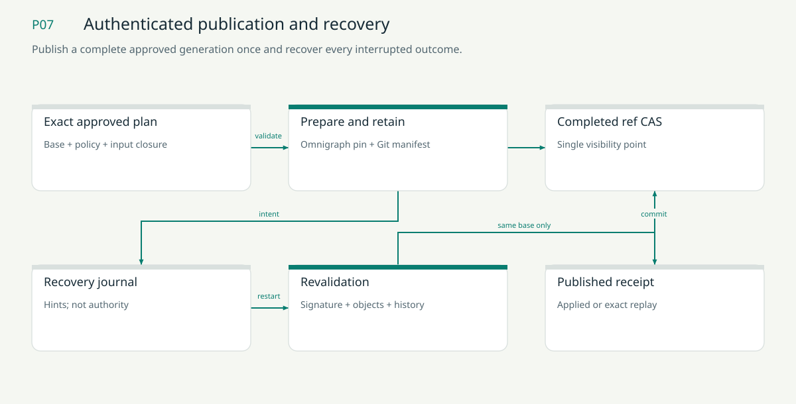
Build
- Working source-to-approval-to-publication vertical slice
- Verified protocol reducer and action map
- Crash/race/replay receipts and operator recovery output
Exit gate
- One winner per expected predecessor; changed replay input conflicts.
- Post-CAS crash recovers as already applied without duplicate admission.
- Journal tampering/missing closure never creates publication authority.
Full stage instructions · Gates: WF05, WF10, WF11, WF19
P08Workflows and provider-neutral catalog
Preserve useful kctx workflows while keeping extensions outside the calculus.
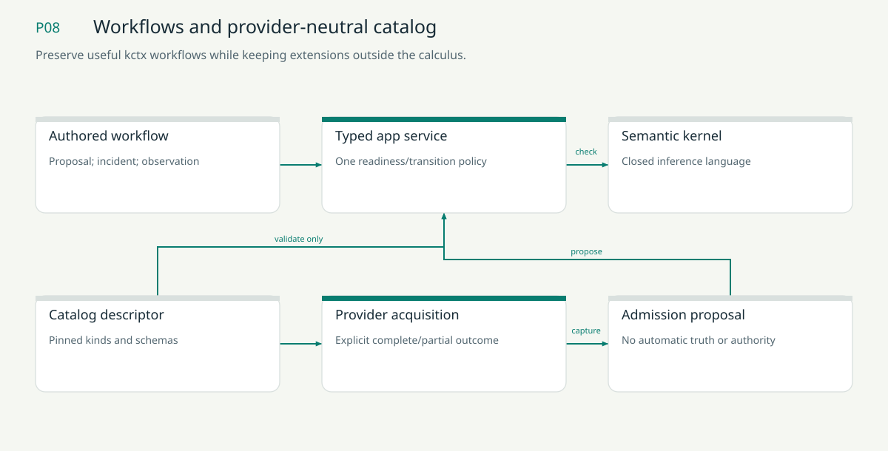
Build
- Complete authored workflow services
- Catalog defaults + legacy provider profiles
- End-to-end multi-domain fixtures and updated operation map
Exit gate
- All baseline command behaviors have tested parity or approved explicit changes.
- Unknown extensions cannot silently fall back or inject inference/authority.
- Unknown authored content survives edits; gate readiness has one owner.
Full stage instructions · Gates: WF12
P08DBind implementations to accepted designs
Keep design approval stable while exact implementation evidence changes.
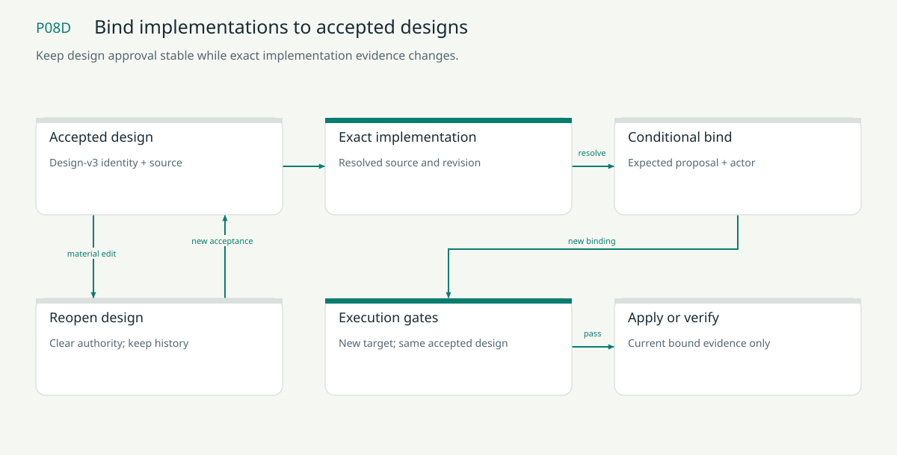
Build
- kernel/design + authored projection/service
- V13 + M09 with caller/effect correspondence
- Migration, bind/reopen CLI and recovery fixtures
Exit gate
- Design can be accepted before implementation exists; bind resolves exact source/target.
- Rebind preserves approval but old-target passes cannot satisfy execution gates.
- Stale CAS, changed design and finalized-history rewriting are rejected.
Full stage instructions · Gates: WF20, WF02, WF04, WF05, WF06, WF07, WF11
P08SScribes and immutable writs
Let small scripts acquire evidence through a supervised, bounded and proved protocol.
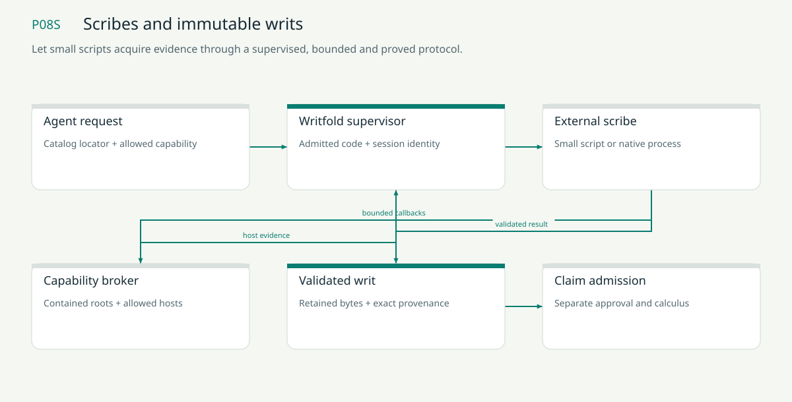
Build
- writfold-scribes + catalog descriptors + optional script SDK
- M07/M08/V11 source-bound proof and calibration receipts
- Real local/HTTP integrations and script-author guide
Exit gate
- Only admitted code/runtime/grants can execute; no automatic plugin loading from sources.
- Late, duplicate, cancelled or old-session replies cannot create accepted writs.
- Complete acquisition requires validated stable transfer; no plugin can sign/admit claims.
Full stage instructions · Gates: WF18, WF05, WF06, WF07
P09Pinned context and agent interface
Deliver bounded usable context through one native CLI and stable stdio service.
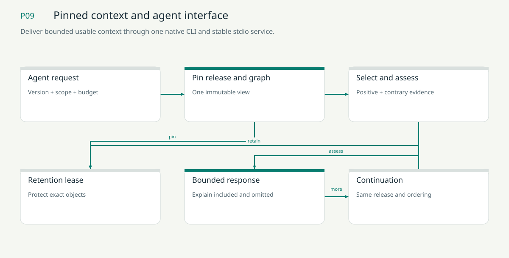
Build
- Native CLI + initialized JSON-RPC service
- Context/explain/graph query and continuation types
- Installed transport and query completeness fixtures
Exit gate
- No command shells out to the Python host or another CLI frontend.
- Every page uses the same release, filters and ordering or refuses.
- Machine stdout is clean; omissions/contradictions remain explicit.
Full stage instructions · Gates: WF13, WF19, WF21
P09VReadable views and Obsidian companion
Publish faithful, scoped knowledge views with readable Obsidian navigation and an optional CLI companion.
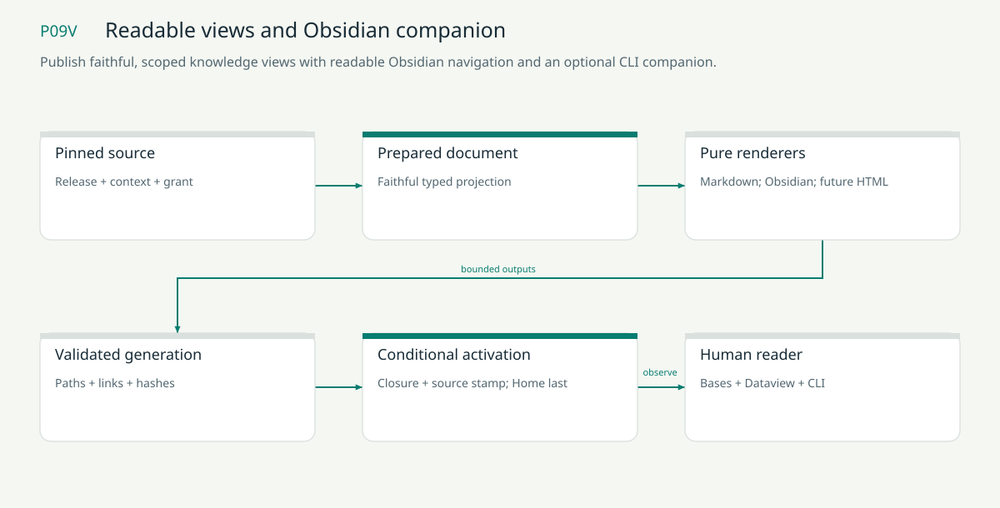
Build
- Typed prepared documents + pure renderers
- Owned generation publisher and recovery model
- Native Obsidian profile and reading acceptance
Exit gate
- V14/M10 and all view isolation/recovery scenarios pass.
- Human files survive; stale views never masquerade as current.
- CLI/plugin profile and readable fallback pass on the admitted PC.
Full stage instructions · Gates: WF02, WF05, WF06, WF07, WF21, WF22, WF23
P10Migration, sync and retained history
Move and restore the full knowledge closure without losing authority or history.
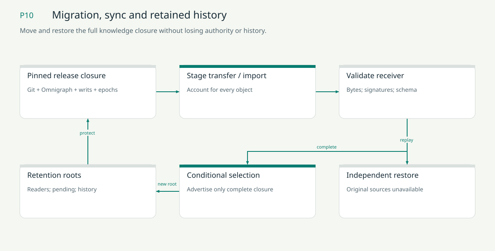
Build
- Migration and independent restore tooling
- Local native/Git sync with closure receipts
- Retention/GC reducer, roots explain and race fixtures
Exit gate
- Every input has a disposition; repeats are idempotent; source-removal restore succeeds.
- Half-transfers never advertise incomplete releases; two clients do not erase history.
- Pinned readers and pending approved operations survive GC; rollback does not erase corrections.
Full stage instructions · Gates: WF05, WF11, WF14
P14Engineering identities and ledger
Establish exact identities, durable operational history and the conservative calculus boundary.
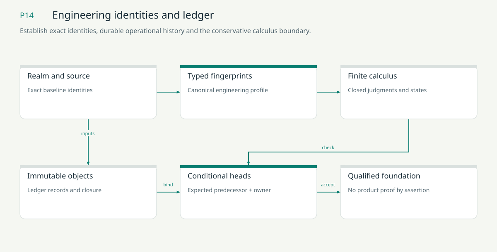
Build
- Identity and codec contracts
- Durable ledger and head CAS
- Lean definitions and proof mapping
Exit gate
- No identity or authority substitution.
- Crashes preserve honest stream state.
- Golden codecs and model checks agree.
Full stage instructions · Gates: WF25, WF02, WF03
P15Skills and procedure composition
Preserve existing Markdown and scripts while checking loading, calls and effect ceilings.
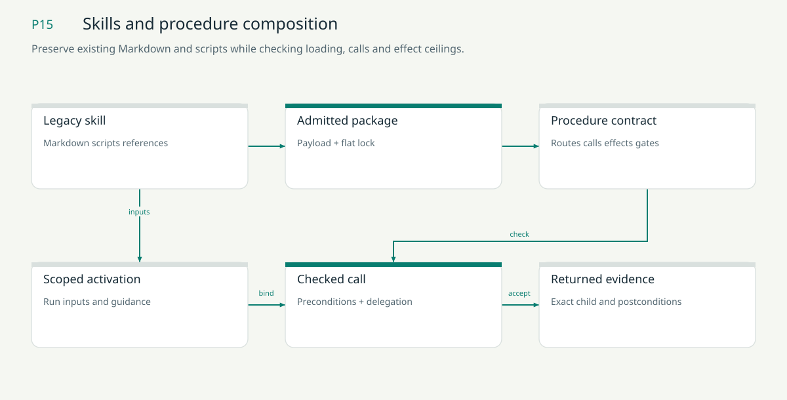
Build
- Pinned skill import and loader
- Typed procedure contracts
- Nested-call qualification
Exit gate
- Prose cannot grant capabilities.
- Calls bind exact inputs and results.
- Active revisions never hot-swap.
Full stage instructions · Gates: WF26, WF02
P16Controlled effects and recovery
Authorize real effects through bounded adapters and shared resource ownership.
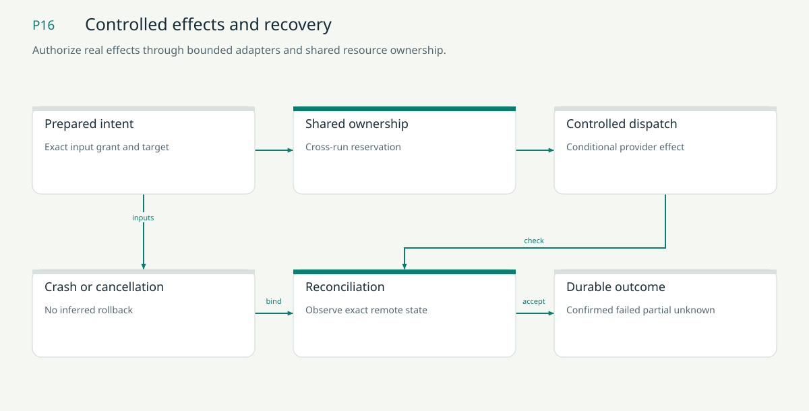
Build
- Admitted effect adapters
- Shared ownership and fencing
- Crash and outcome reconciliation
Exit gate
- No stale or ungranted dispatch.
- Unknown outcomes remain explicit.
- Resources wait for real teardown.
Full stage instructions · Gates: WF27, WF02
P17Cross-repo author-change procedure
Deliver one complete change lifecycle across API, SDK and CLI repositories.
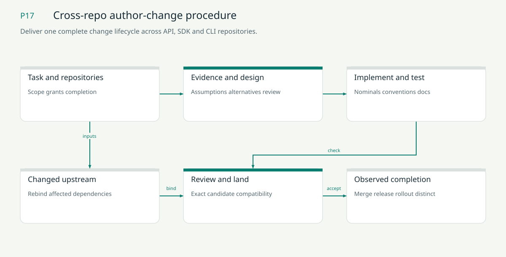
Build
- Complete author-change procedure
- Cross-repo compatibility matrix
- PR and recovery evidence
Exit gate
- Tests bind the actual repo vector.
- Partial landing has a safe path.
- Review changes invalidate evidence.
Full stage instructions · Gates: WF28, WF02
P18Learning and reviewed promotion
Turn failures and feedback into evaluated revisions without self-authorization.
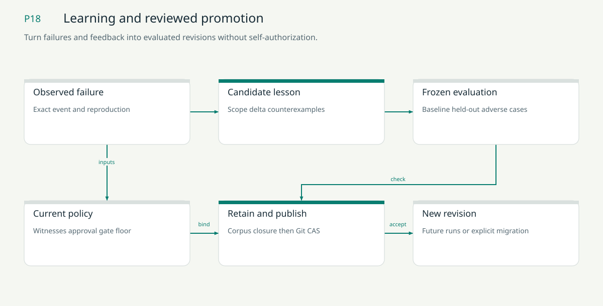
Build
- Scoped candidate lifecycle
- Frozen empirical evaluation
- Authenticated promotion bridge
Exit gate
- Observations do not self-admit.
- Learning cannot weaken gate floors.
- Published evidence survives pruning.
Full stage instructions · Gates: WF29, WF02
P19Unified dossiers and restoration
Join all three semantic graphs through exact cuts and readable human views.
Build
- Two-family storage and exact cuts
- Human change and learning dossiers
- Independent restore and rebuild
Exit gate
- Projection cannot authorize effects.
- Views disclose pins and omissions.
- Restore cannot replay old effects.
Full stage instructions · Gates: WF30, WF21, WF22, WF23
P11Qualify outcomes and Rust cutover
Demonstrate complete behavior, protocol evidence and measured usefulness on the candidate.
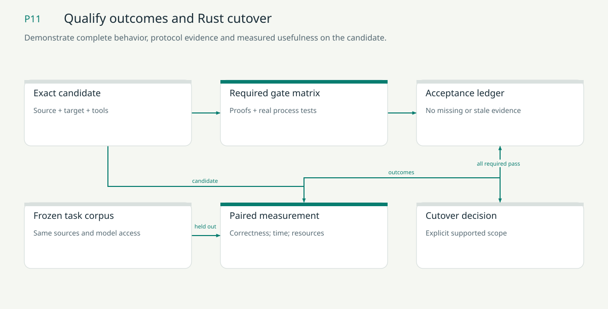
Build
- Integrated qualification and traceability report
- Matched correctness/resource/outcome measurements
- Cutover decision + migrated caller contracts
Exit gate
- No unresolved deterministic candidate regression or required proof gap.
- Predeclared budgets/outcome policy met; limits and confounders disclosed.
- All delivered workflows run with the Rust artifact; no hidden Python fallback.
Full stage instructions · Gates: WF00, WF01, WF02, WF03, WF04, WF05, WF06, WF07, WF08, WF09, WF10, WF11, WF12, WF13, WF14, WF15, WF18, WF19, WF20, WF21, WF22, WF23, WF24, WF25, WF26, WF27, WF28, WF29, WF30, WF31, WF32, WF33
P12Package the native product
Ship a reproducible Linux/WSL artifact and an honest offline runtime closure.
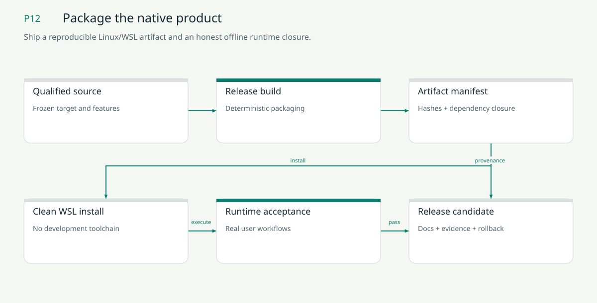
Build
- Linux x86_64 release archives and offline bundle
- Checksums/SBOM/license/qualification closure
- Installed clean-machine acceptance report
Exit gate
- No hidden Docker/Python/proof runtime dependency; Git/Omnigraph closure is explicit.
- Bad download/update is refused; user data survives interrupted install/uninstall.
- Every release claim maps to exact artifact/source evidence.
Full stage instructions · Gates: WF16
P13Website and project launch
Present the real product through a polished static site tied to its exact release.
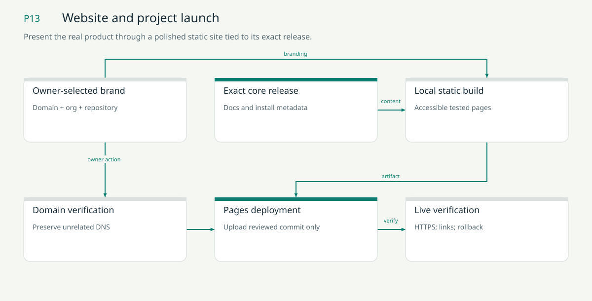
Build
- Static website source + rendered artifact
- Porkbun/Pages checklist and exact release links
- Site qualification and, if authorized, deployment receipt
- SVG icon variants + minimal homepage specification
Exit gate
- Install/examples match a real release; no exaggerated verification claim.
- Pages only deploys the reviewed static commit and never builds product code.
- Publication/DNS/purchase are reported distinctly from local preparation.
Full stage instructions · Gates: WF17, WF21
Source and integrity
This is an implementation plan, not a completed Rust product. See README, the source archive and evidence directory. Run python3 tools/check_bundle.py to validate the bundle manifest.